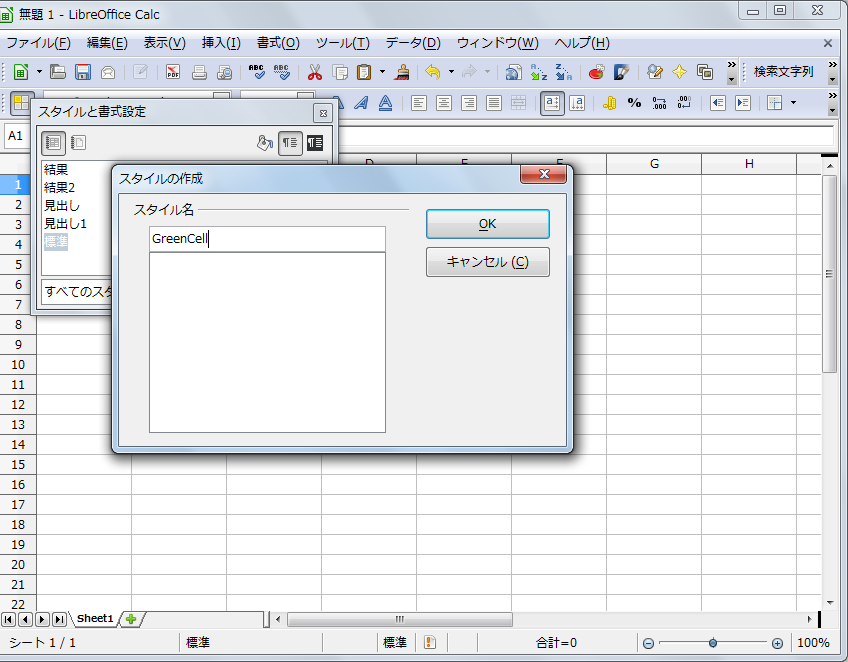
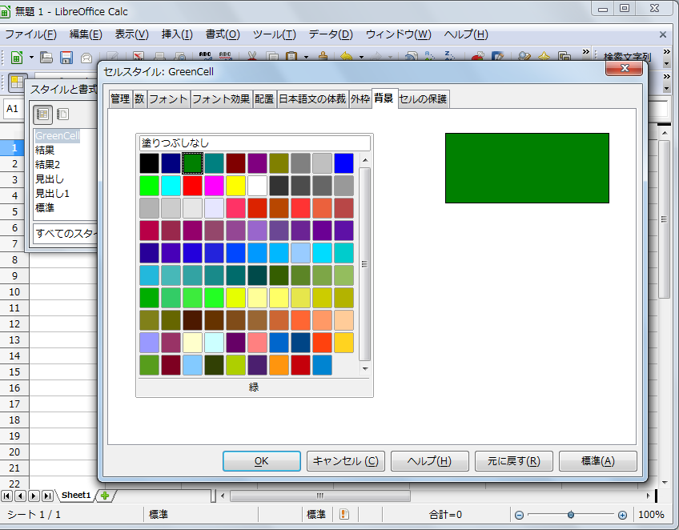
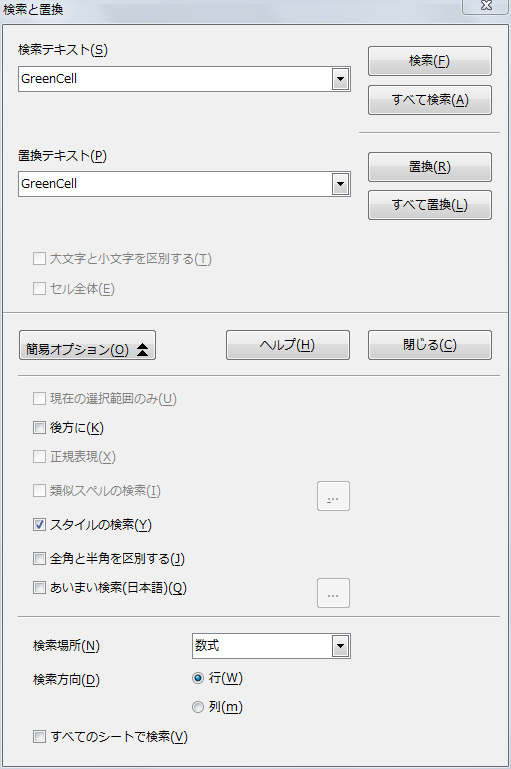

OOoの小枝(Calc編)
【 目次 】
LibreOfficeでは、関数中の区切り「;」を「,」(Excelと同じ)に読替えて下さい。
Cell
Sheet
Style
Draw
[ Graph ]
[ Shape ]
Sort
Search
Function
File
[ Open ]
[ Store ]
[ 履歴 ]
Print
Web
その他
1)AutoCadの図をCalcに貼り付ける
「挿入」→「オブジェクト」→「OLEオブジェクト」→「ファイルから作成」→「検索」→用意したファイルを指定
2)漢字のふり仮名にてsort
別のふりがな表示用の列を作って、=PHONETIC（範囲）を入力して、その列をKeyにしてSort。
因みにExcelのふりがなの編集は、書式->ふりがな->編集で、可能です。
3)セル内の強制改行
その場所へカーソルを移動させて [CTRL]-Return (または [CTRL]-Enter)
4)一番最初のフレーズを大文字(キャピタル)にしない。
メニューバーから ツール->オートコレクト->オプション(これはタブ)を選んで、「全ての文を大文字で始める」のチェックを外す。
5)隣り合っていないセルの選択
シフトキーを押したままにして，クリックしてください。そうした後，隣り合っていないセルをコントロールキーを押しつつ複数選択することができます
6)背景の色数を増やし方
1. 図形描画ツールバーを呼び出す
2. 図形を描く
3. 書式ツールバーの「表面」ボタンをクリックする
4. 「色」タブをクリック
5. 新しい色をカスタマイズする
6. 「名前」欄に、新しい色の名前を入力し、「追加」ボタンをクリック
7)CSV2形式での保存
区切り記号を選ぶだけでなく直接文字を書いて指定できます。お好きな記号またはなし(BS or DELで消す)にできます。囲う部分は「テキストの区切り記号」です。
1. 「名前を付けて保存」のときに「フィルタ設定を編集する」にチェックを付けて保存します。
2. 各記号と文字エンコードを指定します。
8)印刷時に、Excelで言うところの行タイトルの指定
［書式］－［印刷範囲］－［編集］を選んで、「印刷範囲の編集」ダイアログの「繰り返す行」にタイトルとする行の範囲を指定します
9)住所録のCSVファイルで郵便番号"03"のゼロを残す
CSVファイル読み込み時に表示されるダイアログで、テキストとして読み込みたいフィールドの「列の種類」として"テキスト"を選択します。
1. Calcを起動する
2. csvファイルを開く
3. ダイアログが表示されたら、種類を選択したい列名をクリック
4. 「列の種類」で"テキスト"を選択する
10)半角と全角の識別について
ワークシート上ではEXACT関数
マクロではSTRCOMP関数
11)HTMLページからの表の貼り付け
1. IE上で表をコピーします。
2. Writer上で、ツールバーの「貼り付け」ボタンを数秒押しつづけ、表示されたサブメニューの「HTML書式(コメントなし)」を選択して、表として貼り付けます。
3. 編集」メニューの「検索と置換」を選び、「検索と置換」ダイアログで、「検索テキスト」欄に ( を入力し、〔すべて置換〕ボタンを押して、文字 ( を削除します。
4. 同様に、文字 ) を削除します。
5. 表全体を選んで、コピーします。
6. Calc上で、貼り付けます。
12)標準でヘッダとフッタを最初からなしにする
Calcでは、ヘッダーやフッターは「ページスタイル」に設定し、その「ページスタイル」を各シートに設定します。
Calcの初期設定では、
「標準」と「レポート」という2つのページスタイルが用意されていて、このうちの「標準」スタイルが全ワークシート（「表1」「表2」「表3」の3枚が初期状態で用意されている）に設定されています。
もしもシートごとにヘッダーを変えたい場合は、必要な種類のページスタイルを新規作成してそれぞれのシートに割り当てます。
（ただし、シート名は動的に変更されますので標準スタイルを使い回せばOKです）。
新しいスタイルの作成は、
1. 「スタイルと書式」ウインドウで元にしたいスタイルを右クリックして「新規作成」コマンドを選択します。
2. 空白部分を右クリックすると白紙のスタイルを新規作成できます。
3. 作成したページスタイルは、ダブルクリックすることによってカレントシートに割り付けられます。
参考1）Calcではシートとは別にページスタイルを作成するので、偶数シートと奇数シートのヘッダーを区別してページスタイルを作成することが可能です。
そのようなときにExcelでは、シートごとに、いちいちヘッダーを作成する必要があります。
参考2）このような構造上の違いがあるために、ExcelのワークシートをCalcで開くと、シートの名前をつけたページスタイルが自動的に作成され、各シートに割り付けられるようになっています。
13)参照範囲の絶対範囲と相対範囲の切り替え
14)セル内縦書きについて
1.セルを右クリック＞セルの書式設定
2.配置＞文章の配置＞横に を「中央揃え」にで、文字が中央揃えになります。
3.文字の方向＞縦書きにチェック＞日本語縦書きレイアウトモードをチェック無しとすることで、半角文字が横倒しにならなくなります。
15)行挿入時に画像が引き伸ばされなくする方法
16)楽天RSS(リアルタイムスプレッドシート)サービスを使う
Excel : =RSS|'4776.T'!現在値
Calc : =DDE("RSS","4776.T","現在値")
17)生年月日から年齢を計算する
今日で何歳？
age=YEARS(A2;TODAY();0)
YEARS関数の3番目の引数は、「0」を指定すると満年数で、「1」を指定すると暦の年が変わった時点で1年として計算します。
18)マウスによる横スクロール
通常にマウスのホイールを回転させると上下スクロールします。これに加えて、 Shift＋ホイールを回転で横スクロールが出来ます。
19)ワークシートごとに表示倍率を変更する
Excelではワークシートごとに異なる表示倍率を設定できます。
それに対してCalcでは表示倍率を変更すると、すべてのワークシートにその倍率が適用されます。
Calc で、シートごとに別々の倍率を適用したいときは、
1.「ウインドウ」－「新しいウインドウ」コマンドで新しいウインドウを表示。
2.それぞれのワークシートを表示するようにします。
新しいウインドウは独立したアプリケーションウインドウとして表示されますから、Excelの「新しいウインドウを開く」機能よりも、自由度が高く使いやすいと思います。
ちなみに、Calcの表示倍率の変更は、ステータスバーの％表示を右クリックしてポップアップメニューから選択するのが便利です。
20)セルデータのクリア
21)範囲を選択したときのアクティブセルの位置
Excelで範囲を選択したときは、開始位置がアクティブセルとなります。
Calcの場合には範囲選択の終了位置がアクティブセルとなります。
Calcを使って範囲を選択したときにExcelと同じ結果を得たいときは、右下から左上に向けて範囲を選択するようにします。
こうすれば、最終位置である左上をアクティブセルにした状態で範囲を選ぶことができます。
22)範囲とアクティブセルの関係
Calcではアクティブセルと選択範囲はまったく別のもので、切り離すことが可能です。
それに対してExcelは、アクティブセルは常に選択範囲内にあります。
範囲内の1セルがアクティブセルのため範囲はアクティブセルを拡大したもののような印象を持っています。
Calcでは範囲を選択したあとで範囲だけをドラッグして移動すると、アクティブセルだけが元の位置に残ります。
これがアクティブセルと選択範囲を切り離した状態です。
この状態でデータを入力すればアクティブセルに入力されます。
書式を選択すれば選択範囲に設定されます。
23)1セルだけを選択する方法
セルをクリックすると、クリックしたセルがアクティブセルになります。
Excelの場合にはこのアクティブセルの枠線をドラッグするとアクティブセルを移動することができます。
Calcではこの方法でアクティブセルをドラッグして移動することができません。
Calcではそもそもアクティブセルだけをドラッグして移動することはできません。
前項で述べたように、ドラッグして移動できるのは「範囲」です。
マウスを使ってアクティブセルを移動したいときは
1.新しくアクティブセルにしたい位置をクリックします。(1セルだけを範囲として選択すれば、その範囲はドラッグして移動できます。)
2.Shiftキーを押しながらアクティブセルをクリックします。
これで1セルだけを選択した状態ができあがります。
この状態でセル枠をドラッグすれば選択した1セルの範囲が移動できます（アクティブセルは元の位置にのこります）。
Shiftキーを使わずにマウスだけで1セルを選択したいときは、ドラッグ操作でいったん範囲を広げてからそのままアクティブセルの位置まで戻します。
なお、もしも範囲が選択されても不都合がなければ、ドラッグでもアクティブセルが移動できます。
この場合は、枠線ではなくセルそのものをドラッグします。
ドラッグ操作に応じて範囲が選択されてしまいますが、気にせずドラッグ操作を続ければ、選択した範囲の最終セルがアクティブセルとなります。
このように Calcでは、範囲選択と同時にアクティブセルが移動します。
24)「読み取り専用」で開いたファイルの編集
編集中の文書を2重に開くと「読み取り専用」となります。
この「読み取り専用」ファイルの取り扱いがExcelとCalcで違っています。
Excelでは、そのまま「読み取り専用」ファイルを編集することができ、編集後保存するときに別の名前をつけて保存します。
Calcでは「読み取り専用」で開いたファイルは編集できません。
あらかじめ別の名前を付けて保存をしてから編集する必要があります。
25)「オートコンプリート」機能の違い
「オートコンプリート」と呼ぶのは、同じ列にすでに入力されているデータを検索して自動入力する機能です。
ワークシート範囲をデータベース（Excelでは「リスト形式」と呼びます）として利用しているときなどに、同じ都道府県や同じ会社名のデータを繰り返して入力するのに便利なユーザー支援機能です。
ExcelとCalcのどちらもこの機能を装備しています。
Excelのオートコンプリート機能は、先頭文字からの一致を見ていき、唯一のデータが検索できたときにだけ働きます。
それに対してCalcのオートコンプリート機能は、ある程度入力が進んだ段階で、過去に入力したデータを参考表示します。
Excelのように唯一のデータではありませんから、別の候補が存在します。
TabキーとShift＋Tabキーで候補を切り替えることができます。
候補を受け入れるときはEnterキー
候補を消去するときはBackSpaceキーです。
Excelのオートコンプリート機能は、文字列だけに対して有効です。
MS-IMEやATOKなどの日本語入力機能を組み合わせて使っている場合は、確定前の文字列の段階でオートコンプリートが働きます。
Calcのオートコンプリート機能は数式の入力中にも働きます。
過去に入力した関数名や範囲名をポップアップヒントとして表示します。
この場合のオートコンプリートは、同じ列でなくても働きます。
26)「オートコンプリート」機能をオフにする
Excelでは「ツール」－「オプション」コマンドの「編集」ダイアログにある「オートコンプリートを使用する」チェックボックスをオフにします。
Calcでは「オートコンプリート」のオン・オフは独立したコマンドとなっています。
「ツール」－「セルの内容」コマンドの下にサブコマンドとして配置されています。
27)Calcにある2つの「オートコンプリート」機能
Calcには、「編集」－「連続データ」－「連続データの作成」コマンドのダイアログに「オートコンプリート」オプションがあります。
これは、「ツール」－「セルの内容」－「オートコンプリート」コマンドとはまったく別の機能で、「順序リスト」にしたがって連続データを作成する機能です。
この「オートコンプリート機能は、Excelの「オートフィル」機能にあたります。
28)アルファベットを入力すると先頭が大文字になってしまう
Calcでは、初期設定でオートコレクトがオンになっています。
「ツール」－「オートコレクト」コマンドの「オプション」ダイアログで「すべての文を大文字ではじめる」チェックボックスをオフにします。
29)複数シートを選択したときの行列単位での編集
Excelでは複数のワークシート を選択すると「作業グループ」に対する編集となります。
1つのシート上でおこなった編集作業は作業グループのすべてのワークシートに反映します。たとえば、
・セルへのデータ入力や範囲への編集作業
・行列の挿入や削除
なども、すべてグループ編集の対象となります。
Calcの場合にも複数のシート を選択してデータ入力や編集作業をすると、選択したすべてのシートに反映されます。
ただし、この編集操作はデータ入力やコピー、書式の設定などに限られます。
行列の挿入や削除は、選択した表（カレントシート）にのみ影響を与えます。
行列単位での編集結果はそれ以外のシートには反映しません。Excelと取り扱いが違いますから注意してください。
30)日付のシリアル値の開始日が異なる
ExcelもCalcも、日付はシリアル値（連番）で管理しています。このシリアル値の開始日が異なりますので注意が必要です。
（ただし、 Excelには1904年から計算するというオプションが、またCalcには3種類の日付オプションがありますが、通常利用する標準設定によるシリアル値の場合を取り上げています）
Excelは、1900年1月1日を「1」として、以降1日ごとに1を加えます。実際には存在しない1900年2月29日をカウントしています。
Calcは、1899年12月30日を「0」としてカウントを開始しています。こちらは1900年2月29日はありません。
したがって、2000年3月1日以降の日付のシリアル値は同じになります。
1900年1月1日から2月28日までは、Excelのシリアル値はCalcのシリアル値よりも「1」だけ少なくなります。
31)改ページの設定・解除
設定 ： 「挿入」⇒「改ページ」⇒「行の区切り」（又は「列の区切り」)
解除 ： 「編集」⇒「手動改ページの解除」⇒「行の区切り」（又は「列の区切り」)
32)シート毎にヘッダやフッタの有り無しを設定する
各シート毎に、ヘッダやフッタの設定をするには、
ページスタイルを作成し、そのスタイルの設定内容としてヘッダやフッタを付ける、付けないなどを指定する必要があります。
【ページスタイルの作成方法】
1.「書式」→「スタイルと書式」でダイヤログが開きます。
2. 左上の左から2番目の「ページスタイル」アイコンをクリックします。
3. 下から「標準」を選択して、右の右から2番目の「選択スタイルから新規作成」アイコンをクリックします。
4.「スタイルの作成」ダイヤログが表示されるので、「スタイル名」に任意のスタイル名を記述します。
これで、スタイル欄に新しいスタイルが作成されます。
【ページスタイルの変更】
1.作成したスタイルを右クリックして、「変更」→「ヘッダ」or「フッタ」のタブをクリックします。
2.「ヘッダをつける」or「フッタを付ける」のチェックで設定を行います。
3.「OK」ボタンをクリックします。
4. 作成したスタイルを選択して、右上の右から2番目の「水やりモード」アイコンをクリックし、作成したスタイルを適用したいシートのセルをクリックすると（どのセルでもOK）、作成したスタイルが適用されます。
これでシートごとのヘッダ/フッタの有無を変えられます。
印刷Previewでの確認を怠らずに行う。
33)ワイルドカード使用の代わりの検索
曲名(アーティスト名)のデータからの検索
↓
OpenOfficeの検索では「*」をワイルドカードとは扱わないようです。
代わりに正規表現が使えますのでこれで可能です。詳細オプションで「正規表現」にチェックをつけてください。
この場合、
\(.+
で曲名のみ、
.+\(
と
\)
でアーティスト名のみになります。
456(税125)を456に置換の場合⇒\(税.+\)
34)OpenOffice.orgでスペースインベーダー風ゲームをする方法
「Calc」を起動してA1セルに「=GAME("StarWars")」と入力し、Enterキーを押します。
35)選択範囲を図としてコピーする方法
所望の範囲を選択し、コピーしておいて、
1. [挿入]->[オブジェクト]->[OLEオブジェクト]で「OLEオブジェクトの挿入」ダイアログを出す。
2. [新規作成]の[その他のオブジェクト]を選んで[OK]して「オブジェクトの挿入」ダイアログを出す。
3. [新規作成]の中の[OpenDocument 表計算]を選んで[OK]する。
4. 挿入された表にペースト。
36)べき乗関数
べき乗は
=3^4
で計算できますが、
=power(3;4)
でもOKです。
37)印刷範囲が複数ある場合のpage総数設定
フッターでページ番号とページ総数を表示して１つのファイルに複数印刷範囲として設定した表がある場合、
ページ総数はその表の印刷範囲のページ総数ではなく、別の表も含めた総数になってしまいます。
各表のページ総数だけ表示する場合は
1.印刷したい表を選択します。このとき印刷プレビューにしないでください。
2.そのまま、[ファイル]-[印刷]で[オプション]をクリックします。
3.表の[選択した表のみ印刷]で、[OK]をクリックする
とその表だけのページ数になると思います。
また、印刷オプションは、 [ツール]-[オプション]-[表計算ドキュメント]-[印刷]でも設定できます。
38)書式を無視してSortする方法
行によって色を変えているデータをソートすると、色を付けていた行ではなく別の行に色が付いてたりする事が起こる事をがあります。
[ 回避方法 ]
[並べ替え]-[オプション]で[書式を含む]のチェックボックスをオンにするとセルの書式を含めてソートされます。
(つまり「書式を含む」のチェックを外す)
39)セルの内容を切り取り→貼り付けする際の裏技
Excelではマウスでドラッグ＆ドロップするが、Calcでは
いきなり選択範囲の真ん中でマウスボタンを押すだけです。
このとき，マウスだけだと移動になり，Altキーを押しながら操作すると複製になります。
OOoの場合、移動（切り取り→貼り付け）の際は、必ず対象となるセルが選択（反転）されている必要があるようです。
セルの選択は２以上の場合はエクセル同様ドラッグしてできます。
一つだけの場合は、シフトキーを押しながらクリックすると選択できます。
40)連続データの作成（裏技)
1.01.01 → 1.01.02 →1.01.03のような順序の数字を作りたいときに、
[ Excel ]
最初の1.01.01をドラッグする
[ Calc ]
Excelと同様の方法では2.01.01→3.01.01のように変わってしまう。
増分値を指定するには
101.01として連続データを作成したい範囲を101.01から選択し、
[編集]-[連続データ]で、増分を.01にします。
すると101.01～101.02、101.03、101.04となっていきます。
で、2桁の区切りにドットを使いたければ連続データを作成した後に書式設定で、0"."00.00とすればよいと思います。
41)最大公約数を求める
=GCD(数値；数値;・・・・) 数値は最大30までOK
=GCD(100;20;5;50)
と入力すると返し値は「5」となる。
42)最小公約数を求める
=LCM(数値１;数値2;・・・) 数値は最大30までOK
=LCM(3;20;5;7)
と入力すると返し値は「420」となる。
43)ランダムの数を発生させる。
=RAND()
にて0以上1以下の数がランダムで表示されます。表示される値は小数第2位までです。
44)(OpenOffice.org3.21から不可です。)3×3の「O」「X」ゲーム（calcの隠しコマンド)
1.A1セルに「=GAME(A2:C4;"TicTacToe")」と入力
2.gameの説明。単純にComputerが「O｣（大文字)でPlayerが「X」(大文字)という事とA2からC4の9マスが範囲という事が表示。
3.A1セルをダブルクリックでスタート⇒Computerが「O」を打つ
4.PlayerがXを打つ
5.A1をダブルクリック＋「Enter」⇒Computerが「O」を打つ
・
・
として勝負を決める。
45)印刷時に数式が印刷される場合の対処
「書式」⇒「ページ」⇒「シート」タブ選択⇒「印刷」の中の「数式」のCheckを外す。
46)「切り取り／コピーした行や列の挿入」ができない（いちいち挿入場所に空の行や列を作らなければならない）
任意の行（列)を切り取り（コピー)する⇒選択範囲の中で、ＡＬＴキーを押しながらマウスボタンを押し、そのまま挿入したいところにドラッグする
47)furigana,JIS,ASC,KATAKANA,HIRAGANA,HEPBURN関数の追加
1.右記のサイトから「ふりがなextension」をダウンロー。 URL : http://sourceforge.jp/projects/waooo/downloads/22113/furigana-0.3-Win32-imm.uno.pkg/
2.Calcを起動する。
3.ツール ⇒ 拡張機能マネージャー ⇒ 追加 ⇒ ダウンロードしたfileを選択
4.Calcの再起動
48)Dateif関数(Excel)に対応するCalc関数
[Excel]
=DATEDIF("1977/3/18",TODAY(),"y")
[Calc]
=YEARS("1977/3/18";TODAY();0)
YEARS関数の3番目の引数は、「0」を指定すると満年数で、「1」を指定すると暦の年が変わった時点で1年として計算します。
同様にして
[Excel]
=DATEDIF("1977/3/18",TODAY(),"m")
[Calc]
=MONTHS("1977/3/18";TODAY();0)
[Excel]
=DATEDIF("1977/3/18",TODAY(),"d")
[Calc]
=DAYS("1977/3/18";TODAY();0)
49)Excelで作成したファイルをOpenOffice.orgで修正しても、マクロプログラムには問題が起きないようにする。
「ツール」⇒「オプション」⇒「読み込み保存」⇒「VBA属性」⇒「実行可能コード」のCheckを外す。
50)範囲内の整数値を乱数で返す
1～100までの整数の乱数を得るには
=randbetween(1;100)
と入力する。セルをコピーすれば新規の値を返す。
51)計算結果が「0」の場合は空白にする
1.「書式」 ⇒「条件付き書式」を選択
2.条件1に「セルの値が」「次の値に等しい」「0」を入力する
3.「新しいセル」ボタンをクリック
4.「セルスタイル」windowにて「数」タブを選択
5.「書式コード」に「 #;#; 」 を入力
52)縦軸（Y軸）に二つの指標を入れる
1.Y線上で右クリックして「データ系列の書式設定」を選択
2.「系列のオプション」の項目で使用する軸に「第２軸」にチェックをしてＯＫ
53)１つのセルに複数行の縦書き文章を入力
「セルの書式設定」⇒「配置」タブ⇒「縦書き」と「日本語縦書きレイアウトモード」にcheck
54)EDATE関数の使い方
EDATA関数 ： 結果は、開始日から何か月も離れた日付です。月数だけが考慮され、日数は計算に使用されません。
[ 使用例 ]
2009年3月31日の1ヶ月前の場合 : =EDATE("2009-3-31";-1) ⇒ 2009/2/28が得られる。（セルの書式は日付形式）
2009年3月31日の2ヶ月後の場合 : =EDATE("2009-3-31";2) ⇒ 2009/5/31が得られる。（セルの書式は日付形式）
因みに =EDATE("3.31.2009";-1) ⇒ 2.28.2009が得られます。
本式はver2.xから変更されています。
55)セル内文字数の限界
Calc形式では特に問題無し。
但し、Excelでは場合によって255文字制限がある。(Excel97から引きずっている様である。)
[ 参考サイト ]
・ http://www6.ocn.ne.jp/~sumwork/sys_03excelcsv.html
・ http://www.wanichan.com/pc/excel/faq/specifications.htm
56)隔行で行No.を表示させる
 1)左記の式を入力。 ： =IF(MOD((ROW());5) = 0;ROW();"")
1)左記の式を入力。 ： =IF(MOD((ROW());5) = 0;ROW();"")
2)必要行分Copyする。
CC-)変更記録をOFFにする。
「編集」=＞「変更」=＞「記録」のcheckを外す。
CC-)セルの背景を検索する。
[ 検索準備1 ]
「書式」=>「スタイルと書式設定」=>右上に3つあるアイコンの真ん中のアイコン(選択スタイルから新規作成)を選択=>新規スタイル名を設定
[ 検索準備2 ]
新規作成したスタイル名を右Click=>「変更」=>任意の背景色を選択=>右上に3つあるアイコンの右端ののアイコン(スタイルの更新)をClick
[ 検索 ]
「編集」=>「検索と置換」=>「詳細オプション」=>「スタイルの検索」にCheckを入れる=>「検索テキスト」=>に上記で設定したスタイル名を設定=>「検索」

CC-)ハイパーリンクを解除する(同じ方法で再度設定は不可)
該当のCellを選択 => 数式Barに表示されている文字の上で右Click
右Clickした段階でハイパーリンクは解除されます。
再度、設定する場合は
「挿入」=>「ハイパーリンク」で再設定が必要です。
Fc-10)式を表示させる
C-1)Enter押した後の進む方向について（Calc）
C-2)英字の大文字を自動的に小文字に変換され無いようにする。
C-3)文字を反転
C-4)外字ファイルを使用する方法
C-5)マウスポインターを砂時計にする方法
C-6)ファイル履歴の消去方法
C-7)操作性の極秘ポイント
C-8)Calcにてハレ晴レユカイを再現(ニコニコ動画)
C-9)DefaultのCell書式変更(外部)
C-10)CSVデータのダブルクォートを補完する方法